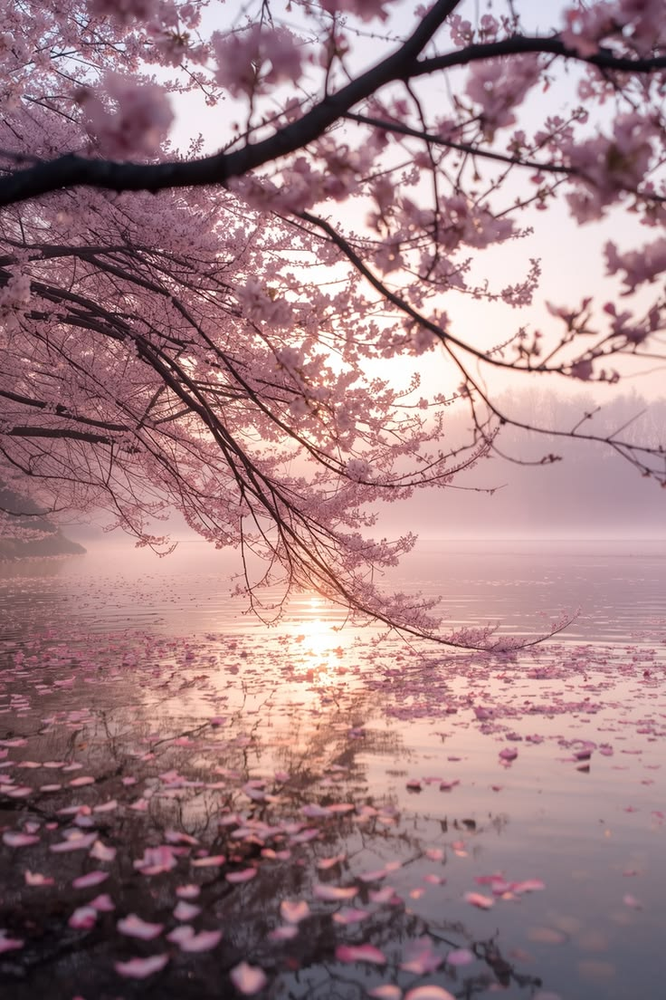
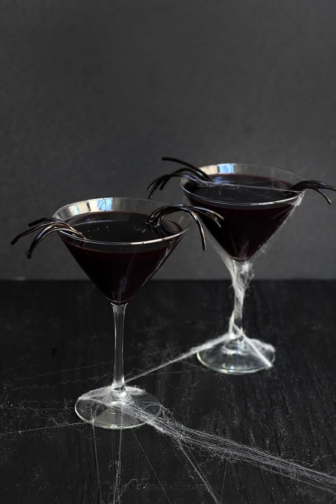
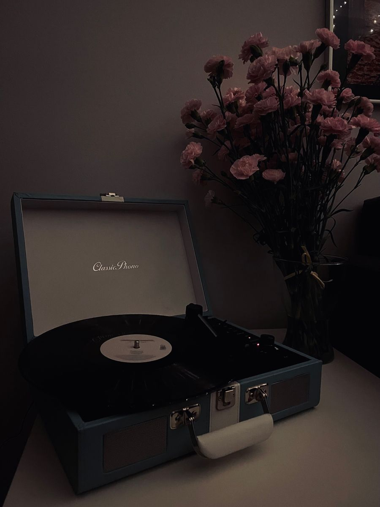

Spring Blossom Season
Every spring I go to watch the cherry blossoms bloom. It is the time when the city seems to pause, and the air smells of sweet nectar. Sharing photos from my walk.
My name is veronika, and this is my personal blog about nature, coffee, and the small joys of everyday life. Here I share photographs, stories, and useful finds. Sit back, relax, and enjoy reading.

Every spring I go to watch the cherry blossoms bloom. It is the time when the city seems to pause, and the air smells of sweet nectar. Sharing photos from my walk.

▶Let me show you how to brew a delicious cup of coffee without a coffee machine. Three simple methods that anyone can try.

My personal playlist for working, reading, or simply relaxing with a cup of coffee.
Early morning is the best time for photography. Soft light, dew on the petals, and silence. Let me show you what I managed to capture this time.
A good shot does not require expensive equipment. What matters most is patience, observation, and the ability to wait for the right moment. Here are my techniques and camera settings.
I usually shoot at sunrise or sunset, when the light is especially soft and warm. This gives my photos mood and depth.
Over the years of walking, I have collected a list of places I want to return to again and again. Quiet parks, old courtyards, and embankments with almost no people.
In this post, I share photos and coordinates — maybe you will want to visit them too.